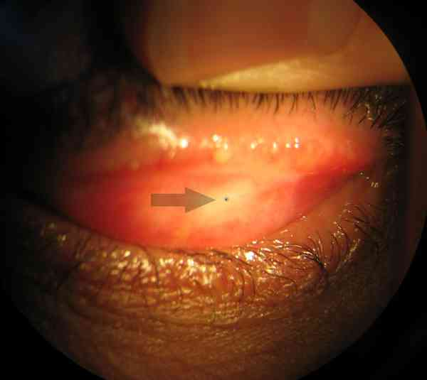
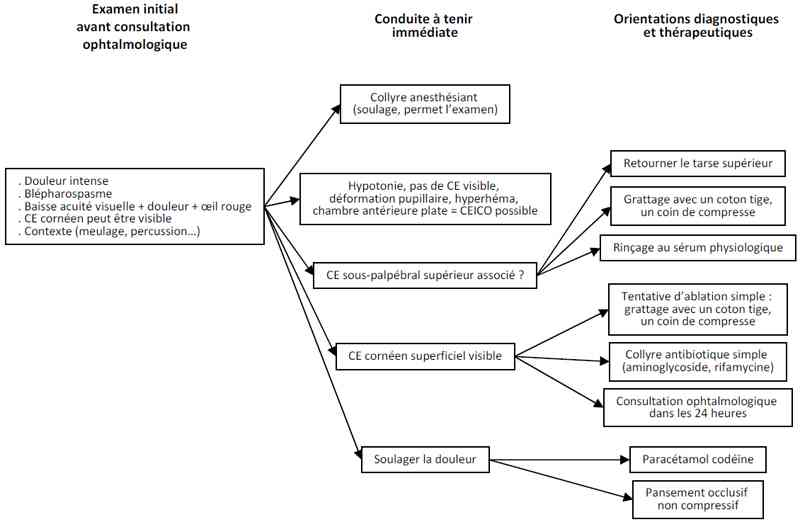

Bienvenue Sur Medical Education
Corps étranger intracornéen
Spécialité : ophtalmologie / traumatologie /
Points importants
A instiller immédiatement : gouttes anesthésiantes
- Soulage la douleur
- Lève le blépharospasme pour l'examen
A faire ensuite
- Paracétamol
- ± pansement occlusif non compressif
- ± cycloplégie
L'anesthésie cornéenne prolongée (> quelques heures)
- Retarde la cicatrisation
- Peut entraîner de graves complications (opacification ou perforation cornéenne)
Eliminer un autre CE
- Sous-palpébral : savoir retourner le tarse palpébral supérieur
- Intra-oculaire (CEIO) : savoir comparer la pression oculaire des 2 yeux au doigt
- Si doute, consultation ophtalmologique en urgence
Cicatrisation habituelle dans les 48 heures
-
Sortie :
- AT 24-48h si douleur importante et/ou vision monoculaire (pupille dilatée ou oeil occlus par le pansement)
- contrôle ophtalmologique entre 48 et 72 heures si CE ôté avec succès
- informer le patient sur la dilatation pupillaire et la protection préventive oculaire
Présentation clinique / CIMU
SIGNES FONCTIONNELS
Douleur oculaire
- Immédiate ou retardée de quelques heures, souvent importante (7-8/10)
- Rarement juste une impression de CE sous-palpébral
- Si absente : suspecter anesthésie cornéenne associée
Blépharospasme (occlusion palpébrale réflexe avec résistance à l'ouverture forcée), larmoiement, baisse d'acuité visuelle brutale (flou)
Hyperhémie conjonctivale
CONTEXTE
Terrain
- Plus souvent homme, adulte jeune, en activité
- Métier à risque (manutention, meulage, perçage) : suspecter un corps étranger intra-oculaire
- Vérification du statut vaccinal anti-tétanique
Antécédents
- CE intracornéen(s) = patient exposé, ne se protégeant pas les yeux
Circonstances de survenue
- Accident du travail
- Activité susceptible de projeter une particule solide sur l'oeil (2 roues ; travaux manuels...)
- Si projection à grande vitesse (exemple : impact de marteau sur cible métallique): suspecter un CEIO associé
EXAMEN CLINIQUE
- Examen sous anesthésie topique, si douleur avec blépharospasme : chlorhydrate d'oxybuprocaïne, une goutte, attendre 15 secondes
-
Examen de l'oeil en lumière blanche puis bleue (ou éventuellement verte) après instillation d'une goutte de fluorescéine (couleur orange, unidose) :
- corps étranger sombre entouré par une lésion « prenant » la fluorescéine, teintée en vert
 _32
Photo
Corps étranger intracornéen
_32
Photo
Corps étranger intracornéen
- Rechercher la nature du CE (métal diffusible ou oxydable, contaminé, teintant) = consultation ophtalmologique
-
Eliminer un CEIO : rechercher (AVANT dilatation éventuelle)
- signe de Seidel (lavage rapide de la fluorescéine, témoin de fuite par plaie transfixiante)
- diminution du tonus oculaire au doigt par rapport à l'oeil controlatéral
- hyphéma (hémorragie de la chambre antérieure)
- déformation de la pupille
-
Eliminer un autre CE sous-palpébral :
- savoir retourner le tarse palpébral supérieur
 _33 Photo Corps étranger sous-palpébral supérieur
CIMU
- Tri 1 : si douleur intense
- Tri 2 : dans les autres cas
Signes paracliniques
IMAGERIE
-
Recherche d'élément radio-opaque (CE) dans l'aire du cône orbitaire
-
Recherche de signes évocateurs de CE associé (orbitaire, CEIO) :
-
radio simple :
-
incidences Face haute, Profil (latéralisé du coté atteint)
-
recherche un pneumorbite, hémosinus
-
TDM orbitaire :
-
incidence en plan neuro-orbitaire, fenêtre tissus mous
-
recherche hyperdensité de la cavité oculaire (hémorragie intra-vitréenne), solution de continuité sclérale, volume oculaire diminué par rapport à l'oeil controlatéral
Diagnostic étiologique
-
Contexte évocateur
Diagnostic différentiel
-
Abrasion cornéenne
-
Corps étranger intra-oculaire
-
Plaie conjonctivale ou transfixiante de la cornée
Traitement
TRAITEMENT PREHOSPITALIER / INTRAHOSPITALIER
-
radio simple :
- incidences Face haute, Profil (latéralisé du coté atteint)
- recherche un pneumorbite, hémosinus
-
TDM orbitaire :
- incidence en plan neuro-orbitaire, fenêtre tissus mous
- recherche hyperdensité de la cavité oculaire (hémorragie intra-vitréenne), solution de continuité sclérale, volume oculaire diminué par rapport à l'oeil controlatéral
Diagnostic étiologique
- Contexte évocateur
Diagnostic différentiel
-
Abrasion cornéenne
-
Corps étranger intra-oculaire
-
Plaie conjonctivale ou transfixiante de la cornée
Traitement
TRAITEMENT PREHOSPITALIER / INTRAHOSPITALIER
Traitement
TRAITEMENT PREHOSPITALIER / INTRAHOSPITALIER
Stabilisation initiale
-
Soulager la douleur par :
- anesthésie topique (de surface) dès l'accueil
- ablation d'un éventuel CE
Suivi du traitement
- Oter un CE (après avoir retourné le tarse palpébral supérieur : vidéo retournement de paupière en rinçant par instillation de NaCl 0,9% ou, si CE visible, avec coton tige humidifié au NaCl 0,9%)
_644
- - -
Retournement de paupière
Soulager
Cycloplégie => homatropine bromhydrate 1% : 1 gtte
Antibiothérapie => collyres de tobramycine ou rifamicine : 1 gtte
Cicatrisation => pommade ophtalmologique vitamine A : application entre la paupière inférieure et l'oeil avant pansement
Maintenir la paupière fermée => rondelle oculaire et sparadrap antiallergique
NB : Les AINS locaux sont dangereux car soulagent par anesthésie cornéenne

_31
Algorithme
Algorithme : corps étranger cornéen
Auteur(s) : Jean-Louis BOURGES
MEDICAMENTS
Surveillance
CLINIQUE
Devenir / orientation
CRITERES D'ADMISSION
CRITERES DE SORTIE DU SAU
ORDONNANCE DE SORTIE
RECOMMANDATOINS DE SORTIE
Mécanisme / description
Algorithme
Bibliographie